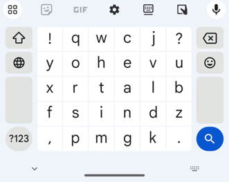

ClearFlow: The Layout for Glide Typing
Introduction
ClearFlow is a soft keyboard layout designed for high-speed and low-error glide typing. It was selected from more than 750,000 layout. It significantly improves text input efficiency compared to Qwerty, because ClearFlow (1) enhances input accuracy, reducing the necessity for backspace corrections by more than 35%, and (2) shortens the time required for drawing word-gestures. It increased the input speed over Qwerty by more than 10% on average, with the maximum increase being 22.3%.
Layout
Benefits over Qwerty
- It shortens the finger travel distance by over 40% per word.
- It reduces the backspace usage by nearly 30%.
Resources
FlowGames App: Mobile Games for Learning ClearFlow